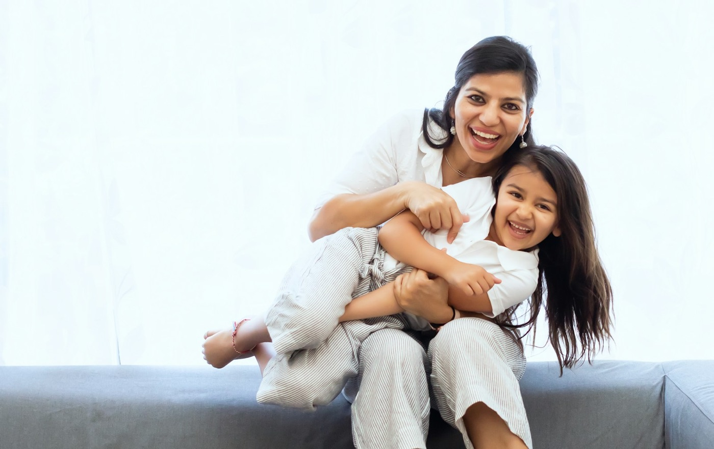
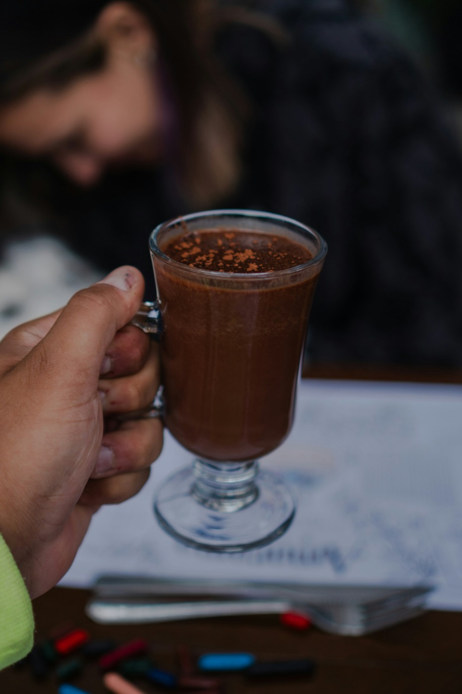
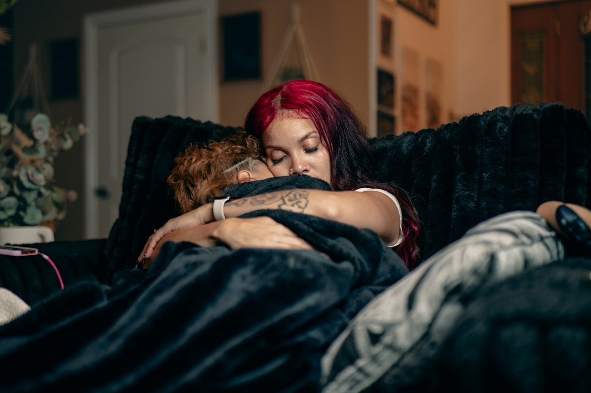
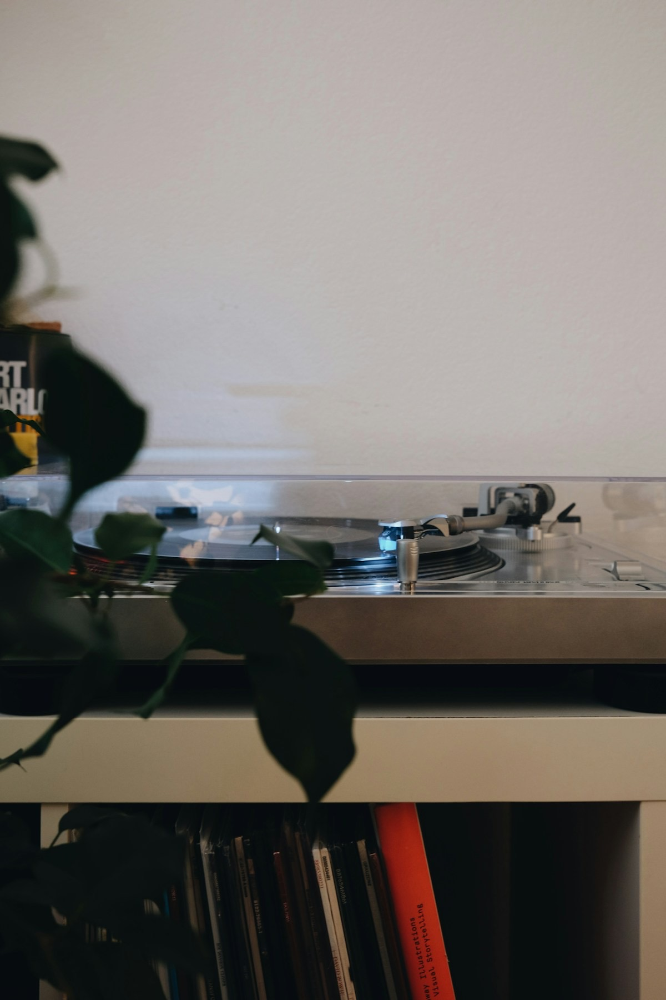

Calm body first
Slow breathing, deep-pressure hugs and gentle movement that help her nervous system settle before anything else.
Regulate, then reasonWhen worry dims her light, it can feel impossible to reach her. I help girls build real confidence and calm their anxious thoughts, and I give parents simple, gentle tools to support them at home.
A relaxed chat with you first, so we can talk about your daughter
So often, the moment you most want to reach her is the moment she closes off. Everything in you wants to sit her down and solve it. But when she is anxious, what she needs first is to feel safe and calm again.
You're not alone, and she's not "too much". This is very common, and there is a gentle way through.
Mary, Shiny Minds CoachingSunday night wobbles, test nerves or dread before a club she isn't sure about.
Feeling she is only as good as her last result, because fear is dressed up as high standards.
Looking at other girls to decide how she is doing, instead of remembering who she is.
Coping okay on the outside, but quietly anxious inside and struggling to say why.
"On the outside I seemed to be coping okay..."
That is why Shiny Minds exists. I know how it feels to be the quiet girl whose light is dimmed by anxious thoughts, and I know how much it means when someone helps you shine again.
As a teacher, in the classroom, I've repeatedly met girls who remind me of my younger self. I've seen how these children's needs often go unmet.
As a mum, I've spent many hours reassuring my own daughters in their battles with worries and anxious thoughts.
As a Christian, I believe that worry is very common and that each child struggling with it has immeasurable worth.
As a life coach, I am continually learning about the functioning of our brains and their amazing ability to form new pathways, adapt and reframe negative thoughts.
Coaching gives her practical, child-friendly ways to handle big feelings, and you get the same tools to use together at home.

Get to know her fears, her values and her hopes, and work as a team towards a happier place.
Slow breathing, deep-pressure hugs and gentle movement that help her nervous system settle before anything else.
Regulate, then reasonLearning to stop, name her worried thoughts and gently question them, instead of believing every "what if".
Take thoughts captiveReplacing comparison with truth: she is fearfully and wonderfully made, and her worth is not her last result.
Psalm 139:14Facing fears one small, achievable step at a time, so school, clubs and new places feel possible again.
Without making it worseSeeing perfectionism for what it often is, fear in disguise, and learning that mistakes are part of growing.
Progress over perfectSimple words and routines for home, so you know what to say when she is worried and how to help her feel safe.
Parents includedEvery girl is different, so coaching is shaped around your daughter, at a pace that feels safe for her.
You tell me about your daughter and what she is facing. No pressure, just a conversation.
Together we agree on what would help most, from anxious thoughts to confidence or perfectionism.
Warm, fun and practical sessions where she learns her calming and brave-thinking tools.
You get simple ways to keep supporting her, so the progress carries on between sessions.
God doesn't ask us to hide away from feeling sad or worried, but to bring it to Him. Shiny Minds blends what science teaches about anxious young brains with the comfort and truth of scripture, offered in a gentle, child-friendly way.
When feelings are allowed, they lose their power. When she knows who she is in God, she has an anchor that comparison can't move.
"The Lord is close to the brokenhearted and saves those who are crushed in spirit."PSALM 34:18
Back-to-school nerves, Sunday night wobbles or a big test tomorrow? Here are three things you can try together.

Before drinking, smell it deeply, then blow slowly to cool it down. It naturally slows her breathing.

Deep pressure can feel calming and organising for many children when their body is buzzing.

Put on a slow piece of music and sway around together. Moving gently helps the body calm down.
Girls aged 8-13 who are struggling with worry, shyness, perfectionism or low confidence, and the parents who want to help them. You don't need a diagnosis to book a chat.
It is a relaxed conversation with you, the parent. You tell me about your daughter and what she is facing, I share how coaching could help, and you decide if it feels right. There is no obligation.
Yes. Parents make all the decisions and bookings, and you will get simple tools and language to keep supporting your daughter at home between sessions.
My coaching is rooted in Christian faith and offered gently. We draw on scripture for comfort and identity, alongside practical, child-friendly tools for calming anxious thoughts.
No. Coaching focuses on building confidence and practical coping tools. If your daughter needs clinical support, please speak to your GP, and I'm happy to talk through what might be the best fit on our call.
Let's chat for 30 minutes and see how I can support your daughter. It is free, relaxed, and all about her.
Book your free 30-minute chat